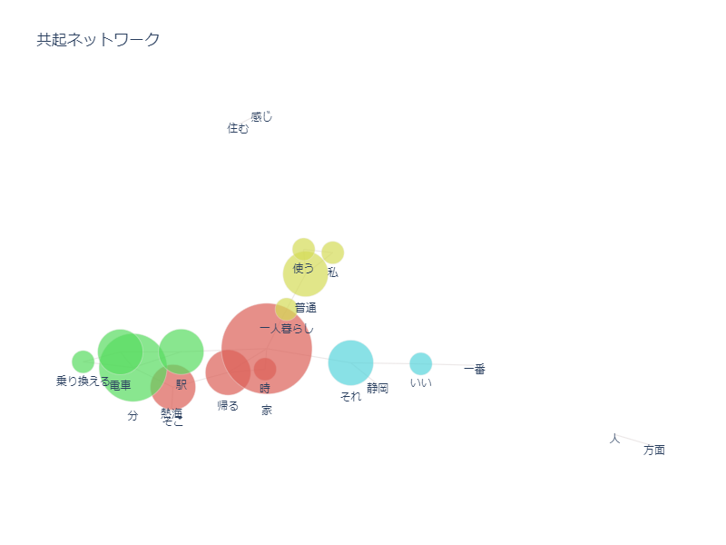
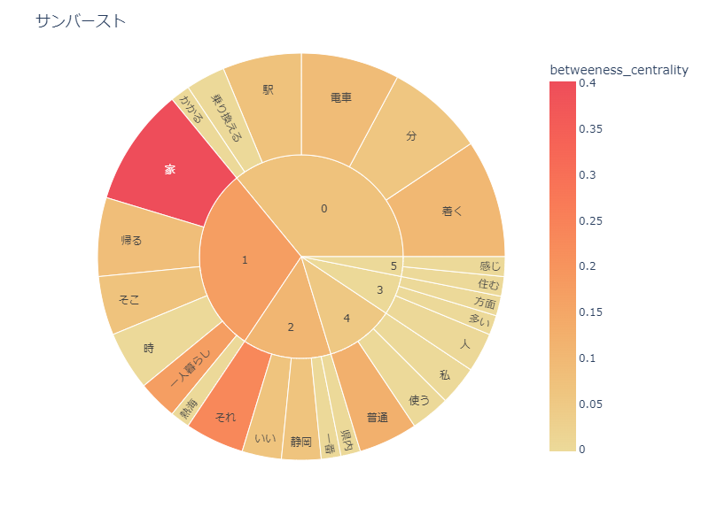
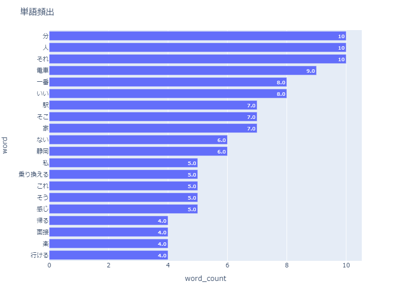

4/19
鎌倉共創プロジェクト
5/11の1回目に向けて、インタビュー準備やインタビュー後の分析を練習した。
インタビュー中はスマホのWordアプリのマイク機能で内容を文字起こしする。
この時、「句読点の自動挿入を有効にする」ことを忘れない。
文字起こしした内容はpythonで分析。



MESH
IoTブロック
MESHを使った、ワークショップを考える。
今日はMESHを使っていろいろ試してみた。
↓動きセンサー、光センサー、LEDのブロックを使い、
制限時間以内にブロックを動かさなければ音が鳴りゲームオーバーするゲームを作ってみた。